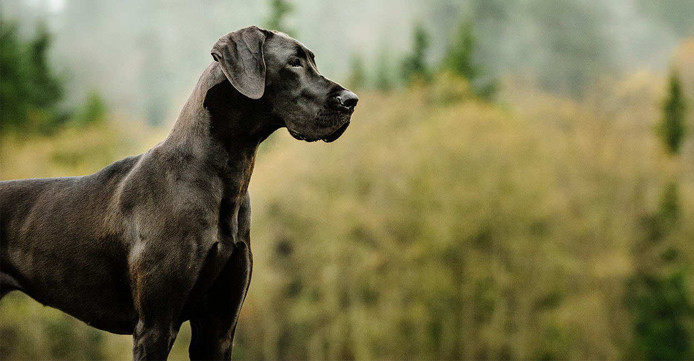
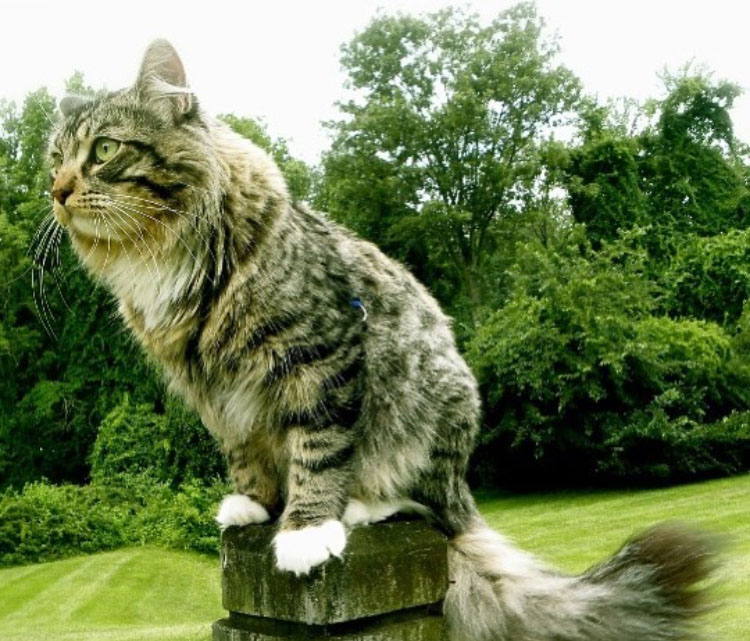

Dogs Are Way Better Than Cats
I have two dogs and they ar both great danes. One is named Arwys and the other is Skye. They are really cute and giant. I think it is more fun to be with dogs because most of them like to play and are more active than cats. Dogs are emotional and can sense the owners' feelings. They know when you are happy, sad, angry, or even pregnant. Dogs are great comapanies when you need them.
Dogs can also do a lot more than just being pets at home. There are dogs that work with policemen, dogs that lead blind people, and even dogs that bring you food to the table like people who work in restaurants. I really appreciate what dogs can do for us and how great they are as pets and our awesome partnets.
UNIQUE CATS
I have a cat and a dog, but I prefer my cat than my dog. I have several reasons why cats are better than dogs.
- Cats are easy,cute, independent, and clean
- They go outdoors by themselves
- Expenses tend to be higher for dogs than cats
- Don't require to take training classes
- Cats use litter boxes for urinating or defecating, but I trained my cat to use my toilet. So, he doesn’t need to use his litter box
- Cats have different moods
- Cats like to follow their owners around alike dogs
